I start by performing a full port scan against the target machine to identify exposed services.
nmap 10.10.10.37 -Pn -sC -sV -p- --open -T4
The scan reveals three services: FTP, SSH,
and HTTP.
I add the target IP address to /etc/hosts for proper hostname resolution.
To gather more information about the web service, I run WhatWeb. The results indicate that the server is running Apache and WordPress.
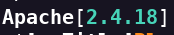
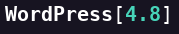
I proceed with directory enumeration in search of potential login pages or attack vectors.
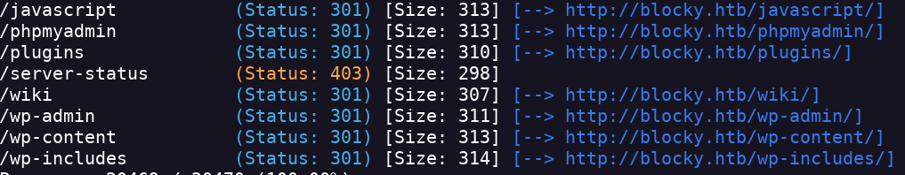
While browsing several discovered paths, I encounter a hint that suggests further investigation.
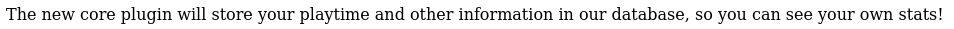
I identify login pages for both phpMyAdmin and WordPress, but I do not yet have valid credentials.
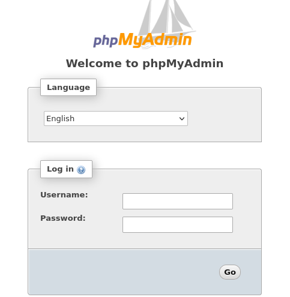
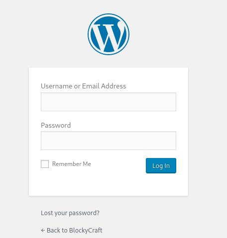
While exploring the /plugins directory under
blocky.htb, I find two files that appear to be used
to store database-related information.
I decompile the .jar file using JD-GUI
and successfully recover hardcoded credentials.
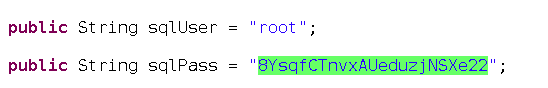
Using these credentials, I log into phpMyAdmin and gain access to the database dashboard.
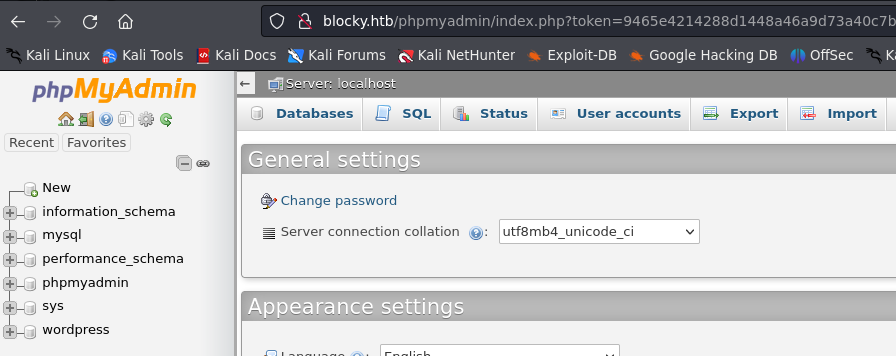
Running WPScan reveals several directories and potential attack vectors.
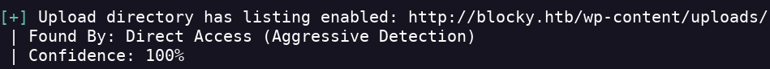
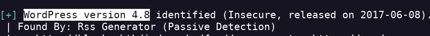
Inside the phpMyAdmin panel, I find credentials for the Notch user.
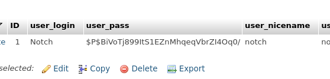
After changing the password, I successfully log into the WordPress administrative panel.
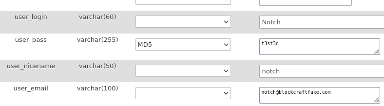
WPScan also highlights the TwentySeventeen theme as a possible attack vector. Since the theme uses PHP files, I upload a PHP reverse shell based on the pentestmonkey payload.
Executing the malicious file grants me a reverse shell,
allowing me to retrieve the user.txt flag.
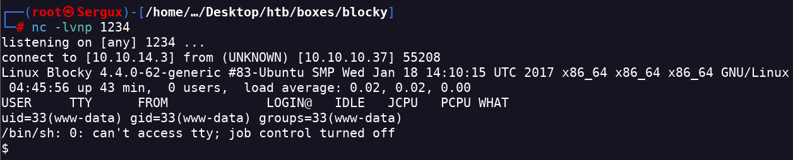
Due to the limited shell, I am unable to switch directly to the Notch user. However, I use the root password previously obtained from the decompiled JAR file to authenticate via SSH.
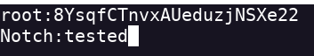
To escalate privileges, I check which commands I can run
as root using sudo -l.
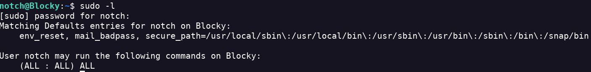
The output shows that I can execute all commands without
providing a password.
Running sudo su grants me full root access,
allowing me to retrieve the root.txt flag.